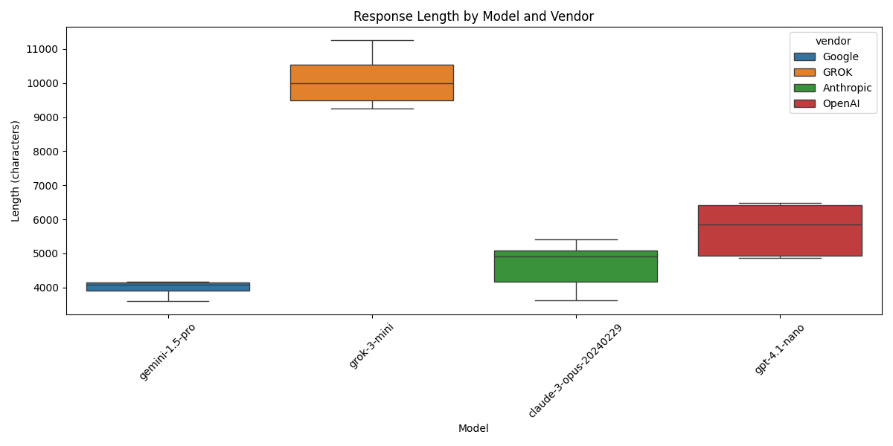
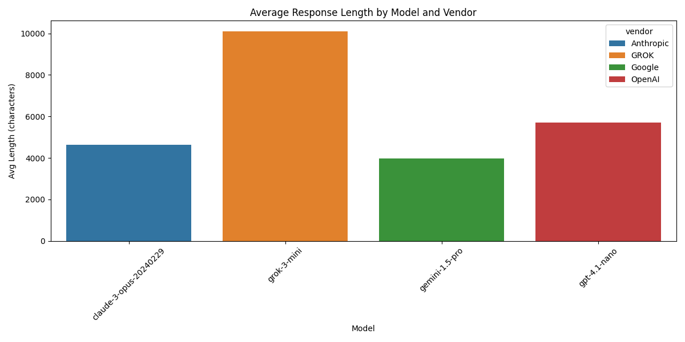
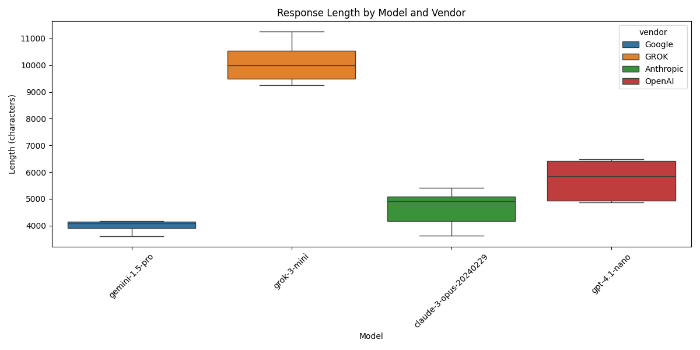
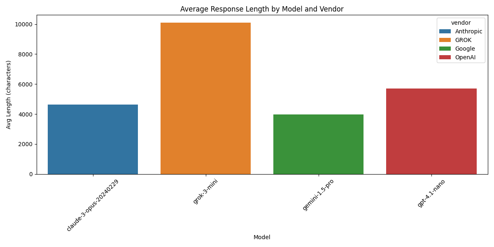

Basic Statistics
Response Counts by Vendor
| count | |
|---|---|
| vendor | |
| OpenAI | 1 |
| 1 | |
| Anthropic | 1 |
| GROK | 1 |
Response Counts by Model
| vendor | model | count | |
|---|---|---|---|
| 0 | Anthropic | claude-3-opus-20240229 | 1 |
| 1 | GROK | grok-3-mini | 1 |
| 2 | gemini-1.5-pro | 1 | |
| 3 | OpenAI | gpt-4.1-mini | 1 |
Processing Time Statistics by Vendor (seconds)
| mean | std | min | max | |
|---|---|---|---|---|
| vendor | ||||
| Anthropic | 32.110493 | NaN | 32.110493 | 32.110493 |
| GROK | 15.308091 | NaN | 15.308091 | 15.308091 |
| 16.973388 | NaN | 16.973388 | 16.973388 | |
| OpenAI | 27.810885 | NaN | 27.810885 | 27.810885 |
Processing Time Statistics by Model (seconds)
| mean | std | min | max | ||
|---|---|---|---|---|---|
| vendor | model | ||||
| Anthropic | claude-3-opus-20240229 | 32.110493 | NaN | 32.110493 | 32.110493 |
| GROK | grok-3-mini | 15.308091 | NaN | 15.308091 | 15.308091 |
| gemini-1.5-pro | 16.973388 | NaN | 16.973388 | 16.973388 | |
| OpenAI | gpt-4.1-mini | 27.810885 | NaN | 27.810885 | 27.810885 |
Processing Time Visualizations


 


